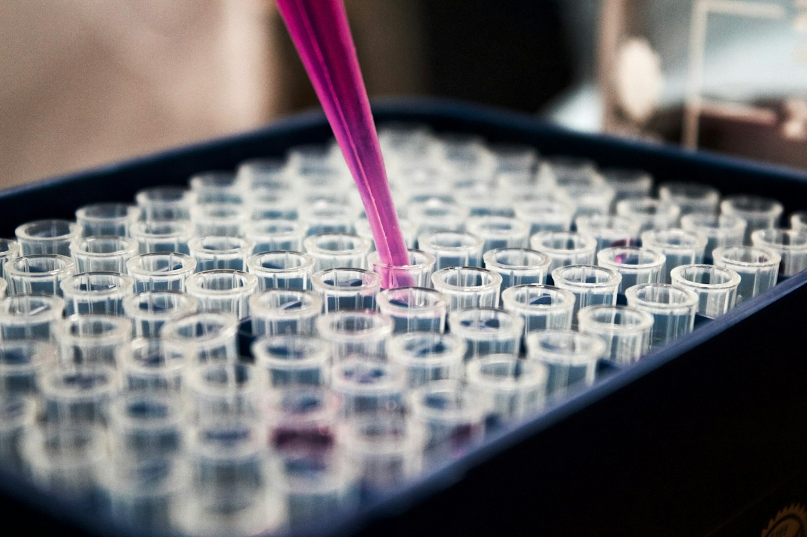

通路合作 · 2025 · 北部
連鎖藥局上架專案
挑戰：門市人員對牛樟芝素材與劑型不熟悉，需要快速可懂的銷售邏輯。
做法：建立三層教育訓練、貨架說明卡與首波試用活動。
成果：三個月完成 12 間門市上架，回購表現穩定。（示範數字）
12 間門市 · 3 個月以下案例為給老闆審閱的示範內容，依產業情境預填。正式對外前會替換為真實案例、數據與客戶授權素材。
挑戰：門市人員對牛樟芝素材與劑型不熟悉，需要快速可懂的銷售邏輯。
做法：建立三層教育訓練、貨架說明卡與首波試用活動。
成果：三個月完成 12 間門市上架，回購表現穩定。（示範數字）
12 間門市 · 3 個月
挑戰：客戶有品牌與通路，但缺乏產品開發與文件準備經驗。
做法：規劃複方膠囊配方、膠囊殼與包裝，整理成分規格與檢驗文件。
成果：產品順利上市，後續追加第二款複方開發。（示範情境）
從 0 到上市 · 2 款產品
挑戰：飼主對泌尿道與眼部保養的差異不清楚，貨架說明不易理解。
做法：依人用／寵物分區呈現，建立犬貓適用對象與劑型對照說明。
成果：門市詢問更加聚焦，通路陳列更清楚。（示範情境）
2 條產品線 · 清晰的選購路徑
挑戰：現場人流多，需要在短時間內說清楚品牌與品項差異。
做法：設計毛孩友好攤位、產品分類卡與互動諮詢流程。
成果：完成首波粉絲溝通與名單蒐集。（示範情境）
現場活動 · 品牌溝通
挑戰：舊頁資訊分散，客戶難以快速找到產品與聯絡方式。
做法：重建品牌、最新消息、雙產品線、實例與訂單入口五大區塊。
成果：洽詢路徑清晰化，訂單入口成為經銷夥伴常用工具。（本頁即為示範）
5 大區塊 · 中英文切換
挑戰：消費者對「子實體與菌絲體差異」缺乏理解。
做法：補充選購指南、三萜類標示說明與常見問題。
成果：頁面停留時間增加，客服重複問題減少。（示範數據）
轉換率 +38%（示意）案例中的數字與成果均為示意，不代表實際成效或客戶背書。